정보처리기사(구) (2006-09-10 기출문제)
1과목: 데이터 베이스
1. 괄호 안 내용으로 옳게 짝지어진 것은?
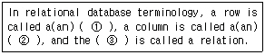
- ① tuple ② table ③ attribute
- ① table ② attribute ③ tuple
- ① tuple ② attribute ③ table
- ① attribute ② tuple ③ table
(정답률: 69%)

2. 데이터 처리를 위하여 응용 프로그램과 DBMS 사이의 인터페이스 제공의 역할을 하는 데이터 언어는?
- DCL
- DUL
- DML
- DDL
(정답률: 68%)
3. DBMS의 필수 기능 중 데이터베이스를 접근하여 데이터의 검색, 삽입, 삭제, 갱신 등의 연산 작업을 위한 사용자와 데이터베이스 사이의 인터페이스 수단을 제공하는 기능은?
- 정의기능
- 조작기능
- 제어기능
- 절차 기능
(정답률: 72%)
4. 스택(Stack)의 응용 분야와 거리가 먼 것은?
- 인터럽트의 처리
- 수식의 계산
- 서브루틴의 복귀번지 저장
- 운영체제의 작업 스케줄링
(정답률: 70%)
5. 데이터베이스에서 사용되는 널(NULL)에 대한 설명으로 가장 적절한 것은?
- 널(NULL)은 비어 있다는 뜻으로 기본 값 “A"를 가진다.
- 널(NULL)은 Space 값을 나타낸다.
- 널(NULL)은 Zero 값을 나타낸다.
- 널(NULL)은 공백(space)도, 영(zero)도 아닌 부재정보(missing information)를 나타낸다.
(정답률: 86%)
6. 분산 데이터베이스의 목표 중 접근하고자 하는 데이터베이스의 실제 위치를 인지 할 필요가 없는 것과 관계되는 것은?
- 장애 투명성
- 병행 투명성
- 중복 투명성
- 위치 투명성
(정답률: 82%)
7. 개체-관계(Entity-Relationship) 모델의 E-R 다이어그램에서 개체 타입을 나타내는 기호는?
- 사각형
- 타원
- 선
- 오각형
(정답률: 80%)
8. 릴레이션의 특성에 대한 설명 중 틀린 것은?
- 두 개의 똑같은 튜플은 한 릴레이션에 포함될 수 없다.
- 하나의 릴레이션에서 튜플의 순서는 존재한다.
- 한 릴레이션을 구성하는 애트리뷰트 사이에는 순서가 없다.
- 한 릴레이션에 나타난 애트리뷰트 값은 논리적으로 더 이상 분해할 수 없는 원자 값이다.
(정답률: 84%)
9. 관계 데이터베이스 모델에서 차수(Degree)의 의미는?
- 튜플의 수
- 테이블의 수
- 데이터베이스의 수
- 애트리뷰트의 수
(정답률: 65%)
10. 아래 그림에서 트리의 차수(degree)를 구하면?
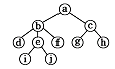
- 2
- 3
- 4
- 5
(정답률: 72%)
11. 분산데이터베이스 시스템의 특징으로 거리가 먼 것은?
- 신뢰성 및 가용성이 높다.
- 점진적 시스템 용량 확장이 용이하다.
- 지역 자치성이 높다.
- 소프트웨어 개발비용이 감소한다.
(정답률: 85%)
12. 다음 그림과 같은 이진트리를 후위순회(postorder traversal)한 결과는?
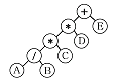
- + * * / A B C D E
- A / B * C * D + E
- + * A B / * C D E
- A B / C * D * E +
(정답률: 77%)
13. 스키마의 종류 중 조직이나 기관의 총괄적 입장에서 본 데이터베이스의 전체적인 논리적 구조로서 모든 응용프로그램이나 사용자들이 필요로 하는 데이터를 종합한 조직 전체의 데이터베이스 구조를 의미하는 것은?
- 관계스키마
- 외부스키마
- 내부스키마
- 개념스키마
(정답률: 64%)
14. Which of the following describes the deque?
- An ordered list in which all insertion take place at one end, the rear, while all deletions take place at the other end the front.
- An ordered list in which all insertions and deletions are made an one end, called the top.
- A finite set of nodes which is either empty or consists of a root and two disjoint binary trees called the left subtree and the right subtree.
- A generalization of a queue because it allows insertions and deletions at both end.
(정답률: 49%)
15. 선형 구조에 해당하지 않는 것은?
- 트리
- 스택
- 큐
- 연결리스트
(정답률: 82%)
16. 스키마, 도메인, 테이블을 정의할 때 사용되는 SQL 문은?
- SELECT
- UPDATE
- CREATE
- MAKE
(정답률: 82%)
17. 데이터베이스의 설계단계 순서가 옳은 것은?
- 요구조건 분석단계→개념적 설계단계→논리적 설계단계→물리적 설계단계→구현 단계
- 요구조건 분석단계→논리적 설계단계→개념적 설계단계→물리적 설계단계→구현 단계
- 요구조건 분석단계→개념적 설계단계→물리적 설계단계→논리적 설계단계→구현 단계
- 요구조건 분석단계→논리적 설계→물리적 설계→구현 단계→개념적 설계단계
(정답률: 84%)
18. 뷰(VIEW)에 관한 설명으로 옳지 않은 것은?
- 뷰는 가상 테이블이므로 물리적으로 구현되어 있지 않다.
- 하나의 뷰를 제거하면 그 뷰를 기초로 정의된 다른 뷰는 제거되지 않는다.
- 필요한 데이터만 뷰로 정의해서 처리할 수 있기 때문에 관리가용이하다.
- SQL에서 뷰를 생성할 때 CREATE 문을 사용한다.
(정답률: 80%)
19. 트랜잭션의 특성이 아닌 것은?
- 원자성(atomicity)
- 무결성(integrity)
- 영속성(durability)
- 격리성(isolation)
(정답률: 60%)
20. 데이터베이스 설계의 논리적 설계 단계에서 수행하는 작업이 아닌 것은?
- 논리적 데이터 모델로 변환
- 트랜잭션 인터페이스 설계
- 스키마의 평가 및 정제
- 트랜잭션 모델링
(정답률: 40%)
2과목: 전자 계산기 구조
21. DMA(Direct Memory Access) 과정에서 인터럽트가 발생하는 시점은?
- DMA가 메모리 참조를 시작할 때
- DMA 제어기가 자료 전송을 종료했을 때
- 중앙처리장치가 DMA 제어기를 초기화할 때
- 사이클 훔침(Cycle stealing)이 발생하는 순간
(정답률: 40%)
22. 다음과 같은 보기는 어느 유형의 주소 명령 방식인가?
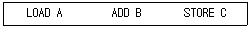
- zero-address
- one-address
- two-address
- three-address
(정답률: 56%)
23. 2의 보수 표현이 1의 보수 표현보다 더 널리 사용되고 있는 주요 이유는?
- 음수 표현이 가능하다.
- 10진수 변환이 더 용이하다.
- 보수 변환이 더 편리하다.
- 표현할 수 있는 수의 개수가 하나 더 많다.
(정답률: 50%)
24. 그림과 같은 논리 회로의 기능은?(단, A, B는 입력, Y는 출력으로 본다.)
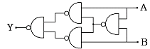
- equivalence
- exclusive-OR
- implication
- NAND
(정답률: 62%)
25. 74라는 수가 8비트의 레지스터에 기록되어 있다. 그중 가장좌측비트는 부호를 나타내고, 나머지 7비트는 절대 값을 나타낸다. 이 레지스터를 우측으로 한비트 산술적 이동(arithmetic shift)을 한 결과는?
- 35
- 36
- 37
- 38
(정답률: 62%)
26. 밀 결합 시스템(tightly-coupled system)에서는 프로세서들 간의 통신이 주로 무엇을 통해 이루어지는가?
- 메시지 전송
- I/O 장치
- 공유 기억 장치
- 캐시 기억 장치
(정답률: 51%)
27. 명령어에서 실행할 동작 부분을 나타내는 연산자(op code)의 기능과 관련 없는 것은?
- 함수연산 기능
- 입/출력 기능
- 제어 기능
- 주소지정 기능
(정답률: 55%)
28. 다음 중 마이크로오퍼레이션은 어디에 기준을 두고서 실행되나?
- Flag
- Clock
- Memory
- RAM
(정답률: 48%)
29. 컴퓨터의 메이저 상태에 대한 설명 중 옳지 않은 것은?
- EXECUTE 상태가 끝나면 항상 FETCH 상태로만 간다.
- memory reference 인 간접 주소 인스트럭션을 수행하기 위해서는 fetch-indirect-execute 순서로 진행 되어야 한다.
- 특정한 인스트럭션에 대해서는INDIRECT 상태가 필요 없다.
- FETCH 상태에서는 기억 장치에서 인스트럭션을 읽어 중앙연산처리 장치로 가져온다.
(정답률: 62%)
30. 어떤 프로그램이 수행 중 인터럽트 요인이 발생했을 때CPU가 확인할 사항에 속하지 않는 것은?
- 프로그램카운터의 내용
- 관련 레지스터의 내용
- 상태조건의 내용
- 스택의 내용
(정답률: 46%)
31. AND 마이크로 동작과 유사한 것은?
- insert 동작
- OR 동작
- 패킹(packing) 동작
- mask 동작
(정답률: 59%)
32. RAID 방식 중 오류 검출을 위하여 해밍코드를 이용하는 것은?
- RAID-1
- RAID-2
- RAID-3
- RAID-4
(정답률: 42%)
33. INSTRUCTION ADD(500)이 수행되면 다음 중 어느 것이 연산장치로 보내지는가? (단, ( )는 INDIRECT ADDRESSING을 뜻하고 기억장소 500번지에는 2002가 저장되어 있음)
- 500
- 500번지의 내용
- 2002
- 2002의 내용
(정답률: 54%)
34. 65,536 워드(word)의 메모리 용량을 갖는 컴퓨터가 있다. 프로그램카운터(PC)는 몇 비트인가?
- 8
- 16
- 32
- 64
(정답률: 60%)
35. 어떤 명령이 수행되기 위해 가장 우선적으로 이루어져야 하는 마이크로 오퍼레이션은?
- MGR→IR
- PC → MAR
- PC+1→PC
- PC → MBR
(정답률: 60%)
36. 제어 기억장치는 보통 어느 기억장치소자를 이용하여 구현되는가?
- CAM
- DISK
- ROM
- RAM
(정답률: 53%)
37. 인터럽트 처리 과정 중 하드웨어를 이용하여 우선순위를 결정하는 것은?
- 폴링 방법
- 스택에 의한 방법
- 데이지 체인을 이용한 방법
- 장치번호 디코더에 의한 방법
(정답률: 58%)
38. 메모리 인터리빙(interleaving)의 설명이 아닌 것은?
- 단위 시간에 여러 메모리의 접근이 불가능하도록 하는 방법이다.
- 캐시 기억장치, 고속 DMA 전송 등에서 많이 사용된다.
- 기억장치의 접근시간을 효율적으로 높일 수 있다.
- 각 모듈을 번갈아 가면서 접근(access)할 수 있다.
(정답률: 70%)
39. 마이크로 오퍼레이션에 대한 설명 중 옳지 않은 것은?
- 마이크로오퍼레이션은CPU 내의 레지스터들과 연산 장치에 의해서 이루어진다.
- 프로그램에 의한 명령의 수행은 마이크로 오퍼레이션의 수행으로 이루어진다.
- 마이크로오퍼레이션 중에CPU 내부의 연산 레지스터, 인덱스 레지스터는 프로그램으로 레지스터의 내용을 변경할 수 없다.
- 마이크로오퍼레이션이 실행될 때마다CPU 내부의 상태는 변하게 된다.
(정답률: 63%)
40. 간접 사이클 동안에는 어떤 동작이 수행되는가?
- 기억장치로부터 명령어의 주소를 인출한다.
- 기억장치로부터 데이터를 인출한다.
- 기억장치로부터 데이터의 주소를 인출한다.
- 기억장치로부터 명령어를 인출한다.
(정답률: 52%)
3과목: 운영체제
41. 선점(preemption) 스케줄링 방식에 대한 설명으로 옳지 않은 것은?
- 대화식 시분할 시스템에 적합하다.
- 긴급하고 높은 우선순위의 프로세스들이 빠르게 처리 될 수 있다.
- 일단 CPU를 할당 받으면 다른 프로세스가 CPU를 강제적으로 뺏을 수 없는 방식이다.
- 선점을 위한 시간 배당에 대한 인터럽트용 타이머 클럭(Clock)이 필요하다.
(정답률: 64%)
42. UNIX에서 파일에 대한 액세스(읽기, 쓰기, 실행) 권한을 설정하여 사용자에게 제한적인 권한을 주려고 할 때 사용하는 명령어는?
- chmod
- cp
- cat
- is
(정답률: 78%)
43. 4개의 페이지를 수용할 수 있는 주기억장치가 있으며, 초기에는 모두 비어 있다고 가정한다. 다음의 순서로 페이지 참조가 발생할 때, FIFO 페이지 교체 알고리즘을 사용할 경우 페이지 결함의 발생 횟수는?
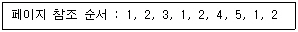
- 6회
- 7회
- 8회
- 9회
(정답률: 61%)
44. UNIX 에 대한 설명으로 거리가 먼 것은?
- 트리 구조의 파일 시스템을 갖는다.
- 대화식 시분할 운영체제이다.
- 이식성(portability)이 높다.
- 다중 태스킹(Multitasking) 환경이 지원되지 않는다.
(정답률: 84%)
45. UNIX 의 셀(shell)에 대한 설명으로 옳지 않은 것은?
- 명령어 해석기이다.
- 시스템과 사용자 간의 인터페이스를 담당한다.
- Bourne shell, C shell등이 있다.
- 프로세스, 기억장치, 입/출력 관리를 수행한다.
(정답률: 71%)
46. 주기억장치 관리 기법 중 worst - fit을 사용할 경우 10K의 프로그램이 할당받게 되는 영역 번호는?(단, 모든 영역은 현재 공배 상태라고 가정한다.)
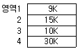
- 영역 1
- 영역 2
- 영역 3
- 영역 4
(정답률: 79%)
47. SJF 기법의 길고 짧은 작업 간의 불평등을 보완하기 위한 기법으로 대기 시간과 서비스 시간을 이용한 우선순위 계산 공식으로 우선순위를 정하는 스케줄링 기법은?
- Round-Robin
- FIFO
- HRN
- Multilevel Feedback Queue
(정답률: 73%)
48. 다음은 무엇에 관한 정의인가?
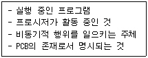
- 페이지
- 프로세스
- 모니터
- 세그먼테이션
(정답률: 80%)
49. 다중 프로그래밍 시스템에서 CPU가 할당되는 프로세스를 변경하기 위하여 현재 CPU를 사용하여 실행되고 있는 프로세스의 상태 정보를 저장하고, 앞으로 실행될 프로세스의 상태 정보를 설정한 후 CPU를 할당하여 실행되도록 하는 것을 무엇이라고 하는가?
- Working set
- Context switching
- Locality
- Thread
(정답률: 52%)
50. 다중 처리기 운영체제 형태 중 주/종(Master/Slave) 처리기에 대한 설명으로 옳지 않은 것은?
- Slave 만이 운영체제를 수행할 수 있다.
- Master에 문제가 발생하면 입/출력 작업을 수행할 수 없다.
- 비대칭 구조를 갖는다.
- 하나의 처리기를Master 로 지정하고 다른 처리기들은 Slave로 처리한다.
(정답률: 79%)
51. 스래싱(THRASHING) 현상의 해결 조치로 틀린 것은?
- 부족한 자원을 증설한다.
- 일부 프로세스를 중단시킨다.
- 성능자료의 지속적 관리 및 분석으로 임계치를 예상하여 운영한다.
- 다중프로그래밍의 정도를 높여준다.
(정답률: 61%)
52. 교착상태(Deadlock)에 관한 설명으로 틀린 것은?
- 교착상태 발생의 필요충분조건은 상호 배제, 점유 및 대기, 환형 대기, 비선점 조건이다.
- 교착상태란 두 개 이상의 프로세스들이 자원을 점유한 상태에서 서로 다른 프로세스가 점유하고 있는 자원을 동시에 사용할 수 있는 현상을 의미한다.
- 교착상태의 회피(avoidance)는 교착상태에 빠질 가능성을 인정하고 적절히 이를 피해 가는 방법이다.
- 교착상태의 회복(recovery)은 교착상태에 빠져 있는 프로세스를 중지시켜 시스템이 정상적으로 동작할 수 있도록 하는 방법이다.
(정답률: 66%)
53. 절대로더에서 할당 및 연결 작업의 수행 주체는?
- 링커
- 로더
- 어셈블러
- 프로그래머
(정답률: 39%)
54. 디스크스케줄링 기법 중 헤드가 항상 바깥쪽에서 안쪽으로 움직이면서 가장 짧은 탐색 거리를 갖는 요청을 서비스 하는 것은?
- FCFS
- C-SCAN
- SCAN
- SSTF
(정답률: 55%)
55. 페이지(page) 크기에 대한 설명으로 옳은 것은?
- 페이지 크기가 작을 경우 동일한 크기의 프로그램에 더 많은 수의 페이지가 필요하게 되어 주소 변환에 필요한 페이지 사상표의 공간은 더 작게 요구된다.
- 페이지 크기가 작을 경우 페이지 단편화를 감소시키고 특정한 참조지역성만을 포함하기 때문에 기억장치 효율은 좋을 수 있다.
- 페이지 크기가 클 경우 페이지 단편화로 인해 많은 기억공간을 낭비하고 페이지 사상표의 크기도 늘어난다.
- 페이지 크기가 클 경우, 디스크와 기억 장치 간에 대량의 바이트 단위로 페이지가 이동하기 때문에 디스크 접근시간 부담이 증가되어 페이지 이동 효율이 나빠진다.
(정답률: 47%)
56. 다음 설명과 가장 밀접한 분산 운영체제의 구조는?
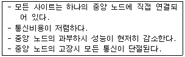
- Ring connection
- Star connection
- Hierarchy connection
- Partially connection
(정답률: 80%)
57. 파일의 구성 방식 중 Indexed Sequential Access File에서 색인 구역(index area)의 색인 종류에 해당하지 않는 것은?
- 레코드 색인
- 마스터 색인
- 실린더 색인
- 트랙 색인
(정답률: 56%)
58. 운영체제가 입/출력 장치를 제어하기 위해서는 장치에 관한 상세한 정보를 알고 있어야 한다. 하지만 새로운 주변 장치가 생겨날 때마다 새로운 장비를 제어할 수 있도록 운영체제를 수정할 수 없으므로 이를 위해서 컴퓨터 주변장치를 만드는 업체에서는 입/출력 장치를 제어하는 프로그램을 만들어 함께 공급하고 있다. 이러한 프로그램을 무엇이라고 하는가?
- 세마포어(semaphore)
- 상주 모니터(resident monitor)
- 작업제어 언어(JCL)
- 장치 구동기(device driver)
(정답률: 54%)
59. 보안 유지 기법 중 하드웨어나 운영체제에 내장된 보안 기능을 이용하여 프로그램의 신뢰성 있는 운영과 데이터의 무결성 보장을 기하는 기법은?
- 외부 보안
- 운용 보안
- 사용자 인터페이스 보안
- 내부 보안
(정답률: 68%)
60. 운영체제(Operation System)의 주요 역할 및 기능으로 거리가 먼 것은?
- 컴퓨터 시스템에서의 오류 처리
- 사용자 간의 자원 스케줄링
- 고급 언어로 작성된 원시 프로그램의 번역
- 입력 및 출력에 대한 보조적 기능 제공
(정답률: 76%)
4과목: 소프트웨어 공학
61. 소프트웨어 형상 관리(Configuration management)의 의미로 가장 적절한 것은?
- 비용에 관한 사항을 효율적으로 관리하는 것
- 개발 과정의 변경 사항을 관리하는 것
- 테스트 과정에서 소프트웨어를 통합하는 것
- 개발 인력을 관리하는 것
(정답률: 68%)
62. 소프트웨어 품질 보증을 위한 정형 기술 검토의 지침 사항으로 옳지 않은 것은?
- 논쟁과 반박을 제한한다.
- 각 체크 리스트를 작성하고 자원과 시간 일정을 할당한다.
- 의제와 참가자의 수를 제한하지 않는다.
- 검토의 과정과 결과를 재검토 한다.
(정답률: 73%)
63. 브룩스(Brooks) 법칙의 의미로 가장 적절한 것은?
- 프로젝트 개발에 참여하는 남성과 여성의 비율은 동일해야 한다.
- 새로운 개발 인력이 진행 중인 프로젝트에 투입될 경우 작업적응 기간과부작용으로 인해 빠른 시간 내에 프로젝트는 완료 될 수 없다.
- 프로젝트 수행 기간의 단축을 위해서는 많은 비용이 투입되어야 한다.
- 프로젝트에 개발자가 많아 참여할수록 프로젝트의 완료 기간은 지연된다.
(정답률: 72%)
64. 화이트 박스(WHITE BOX) 테스트 기법이 아닌 것은?
- 데이터 흐름 검사(DATA FLOW TEST)
- 루프 검사(LOOP TEST)
- 기초 경로 검사(BASIC PATH TEST)
- 동치 분할 검사(EQUIVALENCE PARTITIONING TEST)
(정답률: 72%)
65. CASE 사용에 관한 설명으로 옳지 않은 것은?
- 소프트웨어 부품의 재사용성이 낮아진다.
- 소프트웨어 개발 기간을 단축할 수 있다.
- 유지보수를 간단하고 간편하게 수행할 수 있다.
- 자동화 기법을 통하여 소프트웨어 품질이 향상된다.
(정답률: 73%)
66. HIPO에 대한 설명으로 옳지 않은 것은?
- HIPO는 일반적으로 가시적 도표(visual table of contents), 총체적 다이어그램(overview diagram), 세부적 다이어그램(detail diagram) 으로 구성된다.
- 가시적 도표(visual table of contents)는 시스템에 있는 어떤 특별한 기능을 담당하는 부분의 입력, 처리, 출력에 대한 전반적인 정보를 제공한다.
- HIPO 기법은 문서화의 도구 및 설계 도구 방법을 제공하는 기법이다.
- HIPO 의 기본 시스템 모델은 입력, 처리, 출력으로 구성된다.
(정답률: 44%)
67. 소프트웨어 재사용(reusability)에 대한 효과와 거리가 먼 것은?
- 사용자의 책임과 권한부여
- 소프트웨어의 품질 향상
- 생산성 향상
- 구축 방법에 대한 지식의 공유
(정답률: 76%)
68. 한 모듈과 다른 모듈 간의 상호 의존도 또는 두 모듈 사이의 연관 관계를 의미하는 것은?
- 신뢰도
- 충실도
- 응집도
- 결합도
(정답률: 66%)
69. 람바우의 객체지향분석에서 분석활동의 모델링과 관계없는 것은?
- 객체(object) 모델링
- 절차(procedure) 모델링
- 동적(dynamic) 모델링
- 기능(functional) 모델링
(정답률: 72%)
70. 소프트웨어 시스템 명세서의 유지 보수에 대한 설명으로 거리가 먼 것은?
- 명세서의 유지 보수란 명세서를 항상 최신의 상태로 만드는 것을 말한다.
- 소프트웨어는 계속 수정 보완되기 때문에 명세서도 따라서 보완되지 않으면 일관성을 유지하기 어렵다.
- 최신의 명세서는 필요한 경우 즉시 사용자에게 배포해야 한다.
- 시스템 개발자와 사용자는 동일한 명세서를 사용하기 때문에 시스템의 구조를 사용자도 잘 알고 있어야 한다.
(정답률: 72%)
71. 데이터 흐름도(DFD)의 구성요소에 포함되지 않는 것은?
- 처리공정(process)
- 자료흐름(data flow)
- 자료사전(data dictionary)
- 자료저장소(data store)
(정답률: 64%)
72. 자료 사전(Data Dictionary)에서 반복을 의미하는 기호는?
- =
- { }
- +
- ( )
(정답률: 76%)
73. 객체 지향 기법에서 하나 이상의 유사한 객체들을 묶어서 하나의 공통된 특성을 표현한 것을 무엇이라고 하는가?
- 함수
- 메소드
- 메시지
- 클래스
(정답률: 69%)
74. 시스템 개발을 위한 첫 단계는 사용자의 요구분석과 현재의 시스템에 대한 분석이라고 할 수 있다. 이 중 사용자의 요구분석을 위해 주로 하는 기법으로 거리가 먼 것은?
- 사용자 면접
- 현재 사용 중인 각종 문서 검토
- 설문 조사를 통한 의견 수렴
- 통제 및 보안 분석
(정답률: 63%)
75. 프로토타이핑 모형(Prototyping Model)에 대한 설명으로 옳지 않은 것은?
- 최종 결과물이 만들어지기 전에 의뢰자가 최종 결과물의 일부 또는 모형을 볼 수 있다.
- 개발단계에서 오류 수정이 불가하므로 유지보수 비용이 많이 발생한다.
- 프로토타입은 발주자나 개발자 모두에게 공동의 참조 모델을 제공한다.
- 프로토타입은 구현단계의 구현 골격이 될 수 있다.
(정답률: 80%)
76. 소프트웨어 품질 목표 중 정확하고 일관된 결과를 얻기 위하여 요구된 기능을 오류 없이 수행하는 정도를 나타내는 것은?
- 효율성
- 사용 용이성
- 신뢰성
- 이식성
(정답률: 81%)
77. 소프트웨어 프로젝트 관리를 효과적으로 수행하는데 필요한 3P와 거리가 먼 것은?
- People
- Power
- Problem
- Process
(정답률: 79%)
78. 객체지향 기법에서 캡슐화(encapsulation)에 대한 설명으로 옳지 않은 것은?
- 캡슐화를 하면 객체간의 결합도가 높아진다.
- 캡슐화된 객체들은 재사용이 용이하다.
- 프로그램 변경에 대한 오류의 파급효과가 적다.
- 인터페이스가 단순해진다.
(정답률: 67%)
79. 소프트웨어 학의 발전을 위한 소프트웨어사용자(Software User)로서의 자세로 옳지 않은 것은?
- 프로그래밍 언어와 알고리즘의 최근 동향을 주기적으로 파악한다.
- 컴퓨터의 이용 효율이나 워크스테이션에 관한 정보를 체계적으로 데이터베이스화한다.
- 타 기업의 시스템에 몰래 접속하여 새로운 소프트웨어 개발에 관한 정보를 획득한다.
- 바이러스에 대한 예방에 만전을 기하여 시스템의 안전을 확보한다.
(정답률: 80%)
80. 다음 중 전통적인 소프트웨어 개발 방법론이 폭포수형(waterfall) 모델에서 개발 순서가 옳은 것은?
- 타당성 검토 → 계획 → 분석 → 구현 → 설계
- 타당성 검토 → 분석 → 계획 → 설계 → 구현
- 타당성 검토 → 계획 → 분석 → 설계 → 구현
- 타당성 검토 → 분석 → 계획 → 구현 → 설계
(정답률: 53%)
5과목: 데이터 통신
81. 일반적으로 많은 단말기로부터 많은 양의 통신을 필요로 하는 경우에 유리한 네트워크 형태는?
- 성형
- 환형
- 계층형
- 망형
(정답률: 61%)
82. 송신측은 하나의 블록을 전송한 후 수신 측에서 에러의 발생을 점검한 다음 에러 발생 유무 신호를 보내올 때까지 기다리는 ARQ 방식은?
- continuous ARQ
- adaptive ARQ
- Go-Back-N ARQ
- stop and wait ARQ
(정답률: 74%)
83. 데이터를 설정된 통신 회선을 통하여 전송하는 방식으로서 정보량이 많을 때와 파일 전송 등의 긴 메시지 전송에 적합하여 정보전송의 필요성이 생겼을 때 상대방을 호출하여 연결하고 이 물리적인 연결이 정보 전송이 종료될 때 까지 계속 유지되는 망은 무엇인가?
- 패킷교환망
- 회선교환망
- X.25
- 데이터그램망
(정답률: 56%)
84. 하나의 메시지 단위로 축척-전달(store-and-forward)방식에 의해 데이터를 교환하는 방식은?
- 음성교환용 회선교환 방식
- 메시지교환 방식
- 데이터 전용회선 교환방식
- 패킷 교환방식
(정답률: 61%)
85. 컴퓨터 통신에서 컴퓨터 상호 간 또는 컴퓨터와 단말기 간에 데이터를 송/수신하기 위한 통신 규약을 무엇이라 하는가?
- 프로토콜(protocol)
- 채널 액세스(channel access)
- 네트워크 토폴로지(network topology)
- 터미널 인터페이스(terminal interface)
(정답률: 81%)
86. 다음 중 ISDN에 대한 설명이 아닌 것은?
- 음성(비음성) 서비스를 포함한 광범위한 서비스를 제공한다.
- 음성신호와 컴퓨터단말기에서 사용되는 신호 그리고 텔레비전의 영상신호 등을 하나의 통신망으로 연결이 가능하다.
- 데이터베이스나 정보 처리 기능의 이용 범위가 넓어지게 되어 통신의 이용 가치를 높이게 한다.
- 서로 다른 여러 서비스를 공유할 수 있는 아날로그 망이다.
(정답률: 67%)
87. 디지털전송(Digital Transmission)의 특징으로 옳은 것은?
- 신호에 포함된 잡음도 증폭기에서 같이 증폭되므로 왜곡 현상이 심하다.
- 아날로그 전송보다 훨씬 작은 대역폭을 필요로 한다.
- 아날로그 전송과 비교하여 유지비용이 훨씬 더 요구 된다.
- 장거리 전송시 데이터의 감쇠 및 왜곡 현상을 방지하기 위해서 리피터(Repeater)를 사용한다.
(정답률: 50%)
88. HDLC(High Data Link Control) frame 구성 순서는?
- 플래그→주소부→정보부→제어부→검사부→플래그
- 플래그→주소부→제어부→정보부→검사부→플래그
- 플래그→검사부→주소부→정보부→제어부→플래그
- 플래그→제어부→주소부→정보부→검사부→플래그
(정답률: 63%)
89. 데이터 링크 제어 문자 중에서 수신측에서 송신측으로 부정응답으로 보내는 문자는?
- NAK(Negative AcKnowledge)
- STX(Start of TeXt)
- ACK(ACKnowledge)
- ENQ(ENQuiry)
(정답률: 81%)
90. HDLC 전송제어 절차에서 채용하고 있는 방식이며, 데이터를 송신할 때 데이터블록 구간을 플래그 순서로 식별하고 그림과 같은 형태로 플래그가 구성되는 동기 방식은?
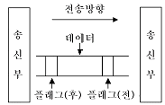
- 문자 동기 방식
- 프레임 동기 방식
- 스위칭 동기 방식
- 연속 동기 방식
(정답률: 64%)
91. 다음 전송 제어의 단계를 순서대로 나열한 것은?
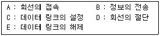
- A→C→B→E→D
- A→C→B→D→E
- C→A→B→E→D
- C→A→B→D→E
(정답률: 75%)
92. 다수의 타임 슬롯으로 하나의 프레임이 구성되고, 각 타임 슬롯에 채널을 할당하여 다중화 하는 것은?
- TDMA
- CDMA
- FDMA
- CSMA
(정답률: 64%)
93. 다음 중 아날로그-디지털 부호화 방법이 아닌 것은?
- ASK(Amplitude Shift Keying)
- FSK(Frequence Shift Keying)
- QAM(Quadrature Amplitude Modulation)
- CDM(Code Division Multiplexing)
(정답률: 61%)
94. 다음 중 패킷 교환 방식의 특징이 아닌 것은?
- store-and-forward방식
- 융통성이 매우 큰 교환 방식
- 패킷의 길이가 제한적임
- 트래픽 량이 적은 경우에 적절
(정답률: 38%)
95. 다음 그림과 같은 전송 방식은?
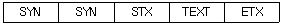
- 문자 동기방식
- 비트지향형 동기방식
- 조보식 동기방식
- 프레임 동기방식
(정답률: 72%)
96. 여러 개의 채널을 몇 개의 소수 회선으로 공유화시키는 장치는?
- 변조기
- 집중화기
- 복조기
- 선로 공동 이용기
(정답률: 63%)
97. 인터넷 접속환경을 구현해 주는 통신규약인 PPP(Point to Point Protocol)를 설명한 것 중 틀린 것은?
- 오류감지 기능이 없다.
- 다중 프로토콜을 지원한다.
- 압축기능을 제공한다.
- 동기/비동기 회선 모두를 통하여 전송한다.
(정답률: 50%)
98. OSI 7-layer 모델에 해당되지 않는 것은?
- Application layer
- Data link layer
- Network layer
- Internet layer
(정답률: 75%)
99. 다음의 설명 내용에 해당 되는 것은?
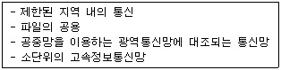
- 종합정보통신망(ISDN)
- 부가가치통신망(VAN)
- 근거리통신망(LAN)
- 가입전산망(Teletex)
(정답률: 77%)
100. 데이터 전송속도가 9600bps인 회선 상에 한 번의 신호로 세 개의 bit를 전송할 때 신호 속도는?
- 3200baud
- 4800baud
- 6400baud
- 9600baud
(정답률: 74%)